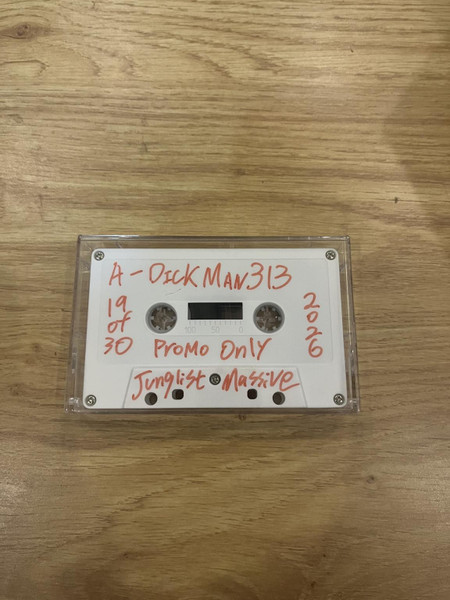

← 返回目录  Darius & DickMan313 Mix 01 年份2026 厂牌OSNS / P.J.E.T. 编号001 风格Jungle / Drum n Bass 载体Cassette 价格¥88 2026年3月发行，OSNS厂牌首张混音带。A面由DickMan313操刀，呈现浓烈的Jungle律动；B面由Darius献上Drum and Bass，两位艺术家共同向九十年代英国地下电子乐致敬。线下活动限量发行。 ▶ 试听 ▶ 试听 ▶ 试听 ▶ 试听